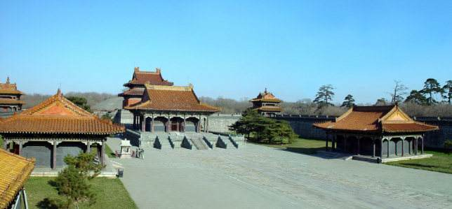

清代陵名一般由嗣皇帝钦定。其次，清代还有一项制度，如果遇到陵名与地名重复时，
必须将地名换掉，这叫避讳。可见，帝王陵名是极其神圣的。
昭陵一名是顺治元年八月初九太宗驾崩一周年火化校宫时确定的。
昭陵陵名的来历前人有两种不同解释，一种解释认为是仿效唐太宗李世民的昭陵，
另一种解释说与古代昭穆制度有关。提出清昭陵仿唐昭陵者是乾隆皇帝。
他在东巡盛京祭扫昭陵时表达了这个见解。其实，这不过是乾隆的附会之言，
昭陵在定名时正是大清刚刚打败李自成农民起义军占据北京，此时明朝及李自成仍有很强势力，
鹿死谁手尚难定论，很难想像有把清太宗与唐太宗相提并列的必要。
乾隆皇帝所以把清太宗与唐太宗并列在于他政治的需要，李世民被历代统治者奉为帝王楷模，
他在位二十三年，礼贤下士，纳谏兼听，国富民强，史称其时代为“贞观之治”，
为盛唐时期经济文化的高度发展奠定了基础。乾隆把今祖与李世民相提并论旨在告慰世人，大清江山也会如同汉唐一样会出现一代新的盛世。

其次，说到昭陵出自昭穆制度的说法也欠妥当。昭穆是古代宗法制度，
此制用于墓葬的排列顺序以及大庙种位的排列9其法以祖宗位居正中，其它各辈分按左昭右穆顺序依次类推。
盛京有永、福、昭三座陵墓，其中一永演为祖陵，地位最高，福陵次之，昭陵排列第三。如果按昭穆制度排列，
永陵应在正中，福陵在其左（东）称为昭，昭陵在其右称为“穆”。而现行永福昭三陵，永陵在最东，福陵在中，昭陵在西，三座陵寝根本构不成昭穆关系。
昭陵的名可能是出于对“昭”字含义本身的选择。古人以昭字作“彰明”、“显扬”解。昭陵陵名的含义就是将太宗文德武功彰明于世．并使之显扬了后的含义，大至不过如此。